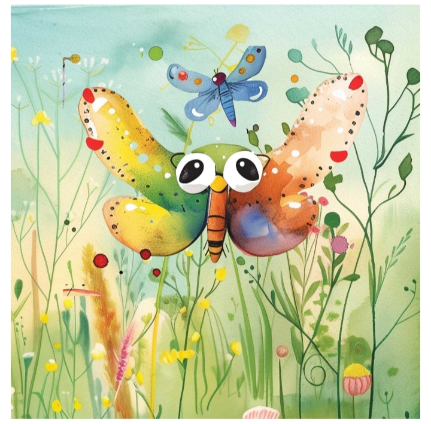
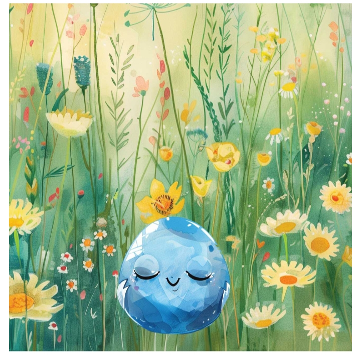

Story 1: The Forgotten Easter Egg

Mum and Dad and Aunty Flo were hiding so many bright coloured
Easter Eggs in Aunty Flo's big garden for the party.
One Easter egg, Shiny Blue Egg, just wasn't pleased at all.
"I am far too easy to find, near these flowers and tall grass.
I thought an egg hunt was supposed to be hard!"
"But not too hard..." a little Shiny Pink Egg nearby squeaked up.
Shiny Blue Egg decided that hard was better than easy.
He looked around and started to roll...
Where are you going?" Shing Pink Egg called after him.
"They aren't going to find me so fast," called Shiny Blue Egg.
"You wait and see!"
Shiny Blue Egg rolled and rolled.
It was hard work rolling... He took a little rest and looked around.
"No, still too easy."
He looked around and saw a blue fence at the end of the garden.
"It's a long way for a little egg to roll, but a good place to hide!"
Shiny Blue Egg started to roll off again.
He stopped for a rest. A butterfly asked him, "Where are you rolling?
All the other eggs are miles away...
"I want to be hard to find."
Shiny Blue Egg carried on rolling.
The Butterfly shook her wings. "It's a big garden!"
And that's how Shiny Blue Egg got forgotten.
He heard a child laughing, shouting, "I've found one!"
"Here here...!" Shiny Blue Egg tried harder.
But now he was in the high grass full of flowers, pink, and, yes, blue...
He shouted as loud as he could, but then he couldn't hear the children.
"They have gone indoors to look at their chocolate eggs,"
the butterfly laughed.
"You hid too hard..." And then the butterfly was gone.
And now what?
Shiny Blue Egg looked around. It was a nice day, so he had a little sleep.
But the weather changed quickly, it started to rain....
Shiny Blue Egg rolled under the bushes to stay a bit drier...
The days passed by. Shiny Blue Egg got droopier and sometimes wetter.
"Easter is over," two more passing butterflies told him.
"Nobody will find you now; they aren't even looking!"
"I hid too hard..." Shiny Blue Egg decided, but then he heard a shout.
"Hey look! This Easter egg must have been forgotten!"
Two children carefully picked him out of the long grass.
"He looks a bit lost, and dirty...."
The little girl gave him a gentle rub with her hanky.
They took Shiny Blue Egg back home.

"Better not to eat it..." Mum told them.
"He's been out in the sun and rain for days.
That's probably not good for chocolate.
And that's how Shiny Blue Egg got cleaned up and put on a toy shelf in the children's bedroom next to the Easter Bunny....
"Did I ever tell you about my adventures?" Shiny Blue Egg squeaked at Easter Bunny.
"Yes, too often..." Easter Bunny flapped his floppy ears.
"I wish they hadn't found you!"